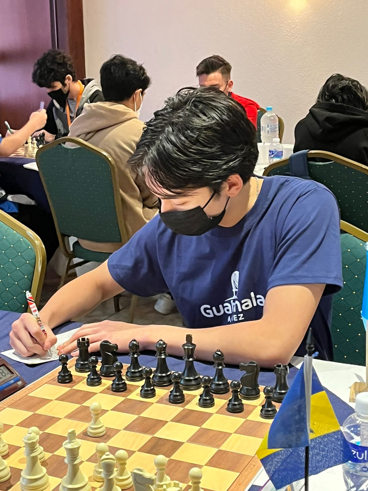
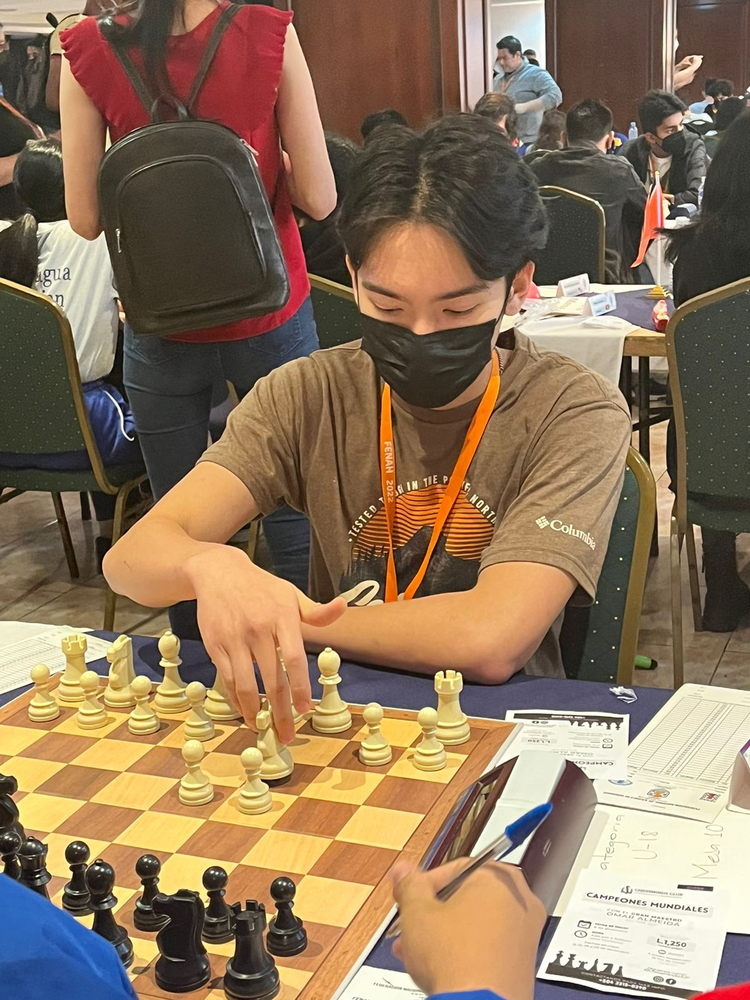
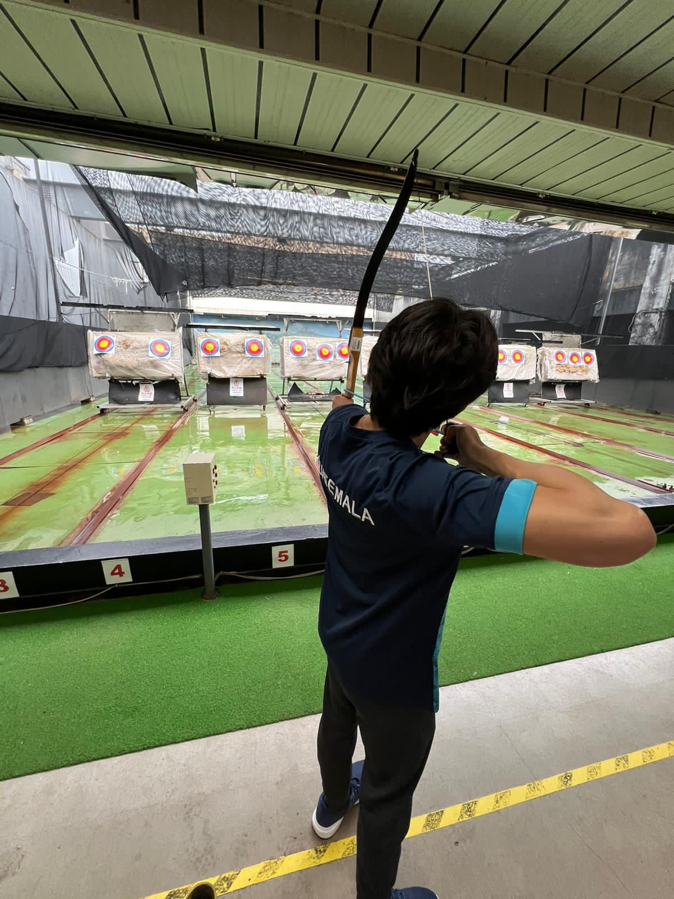
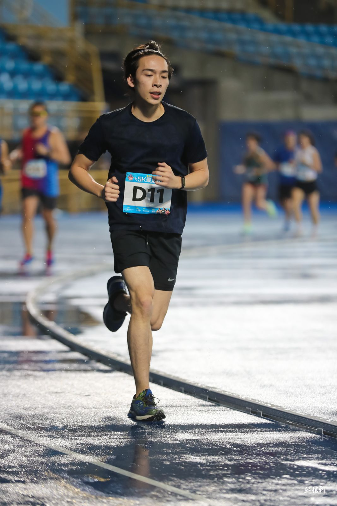
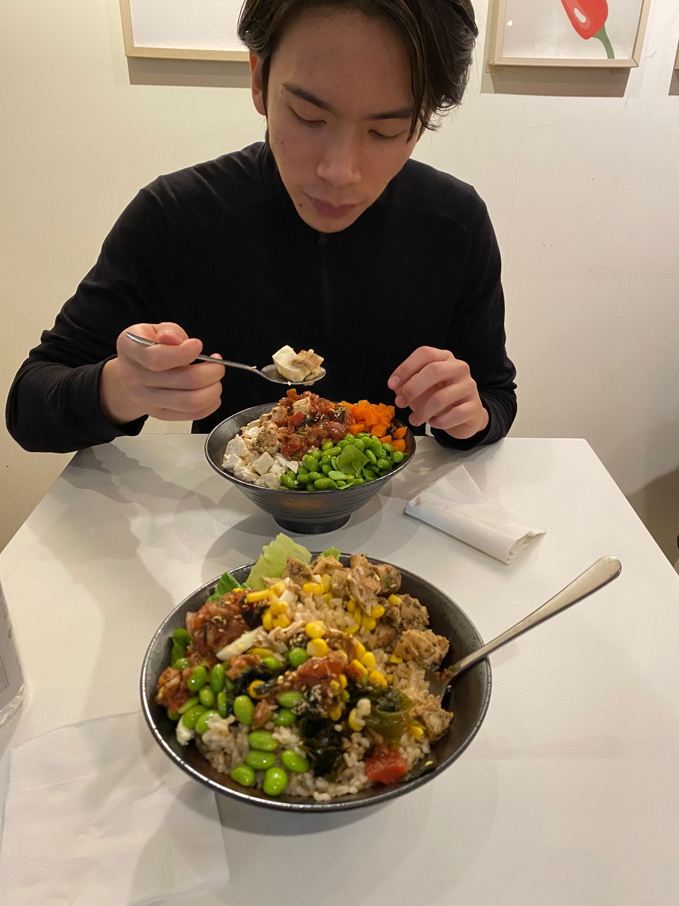

Since childhood, I've engaged in chess, initially instructed by my uncle, a passion that has burgeoned ever since. I adore the strategic essence of chess, fostering meticulous planning and comprehensive foresight. My involvement spans national and international tournaments alike.
 I've consistently pursued physical activity and enjoy maintaining fitness and a toned physique. I hold the belief that the body is akin to a masterpiece, requiring sculpting to truly appreciate its beauty.
 I have a passion for food in fact, it's more than just love; it's a deep adoration. Exploring different cultures through their cuisine fascinates me. Sampling dishes from various corners of the globe provides insight into the rich tapestry of each culture's heritage. I revel in the experience of discovering new flavors and culinary traditions.
